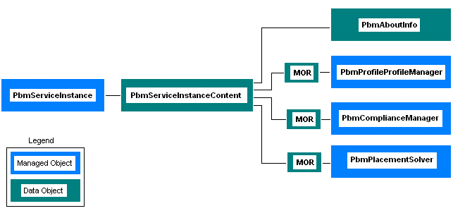

The Storage Policy object model includes a set of server-side managed objects that support storage profile management in the vSphere environment. The Storage Policy managed objects support the following capabilities:
The following figure shows the PbmServiceInstance object hierarchy. The figure shows both managed objects and data objects. The PbmServiceInstanceContent data object provides access to the Storage Policy managed objects and it provides access to information about the service in the PbmAboutInfo data object.
In the figure, “MOR” is an abbreviation for
ManagedObjectReference,
a data object that provides a reference to server-side objects.
A client application uses a ManagedObjectReference when it
invokes a managed object method.
|  |
To gain access to the Storage Policy Server, your client connects to a vCenter Server and obtains the vCenter session cookie. Then you can use the vCenter session cookie to establish the connection with the Storage Policy Server.
After you establish a Storage Policy Server connection, your client uses language-specific Web Services access objects and the PbmServiceInstance and PbmServiceInstanceContent objects to access the Storage Policy managed objects and their methods.
The Storage Policy Web Services access objects are language-specific API binding objects that are
generated from the Storage Policy WSDL. The VMware Storage Policy SDK contains JAXWS bindings
to the Storage Policy API. The JAXWS bindings include the PbmService
and PbmPortType Web Services access objects.
PbmService – Provides access to the PbmPortType object and it provides support
for the Storage Policy Server connection.PbmPortType – Provides access to Storage Policy methods.See the VMware Storage Policy Programming Guide for a description of how to establish a Storage Policy Server connection and access the Storage Policy methods.
All managed object types are listed in the frame at the left of this page. Click a name to display the reference documentation for the managed object.
To quickly find any entry, start typing its name in the Quick Index.
Back to Home